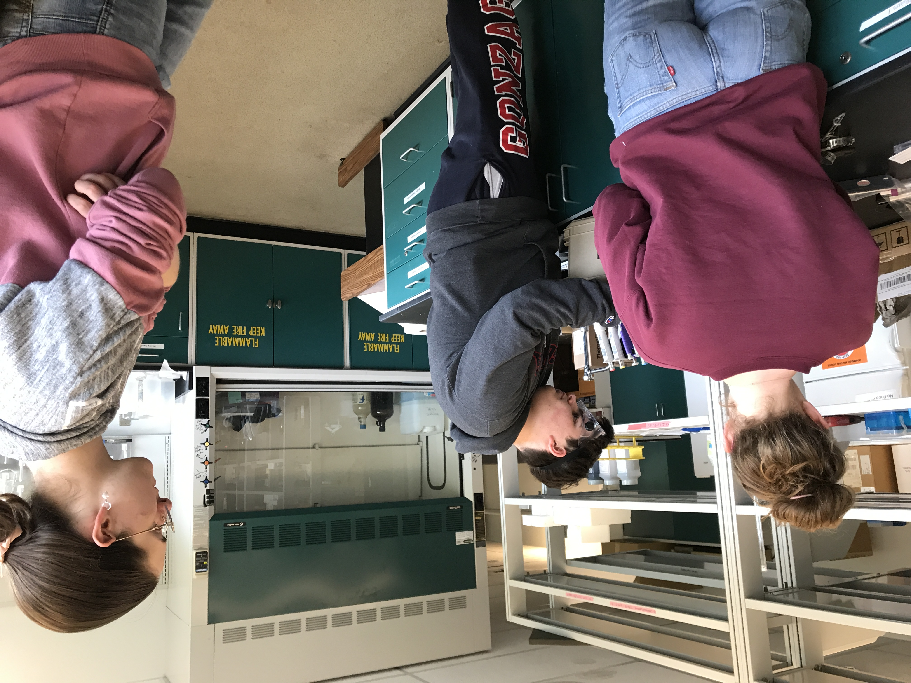
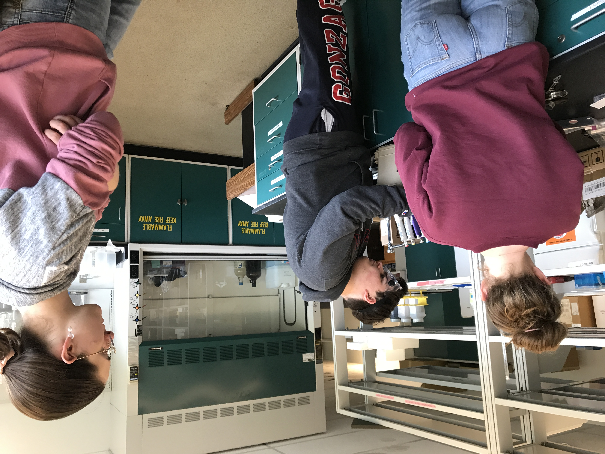
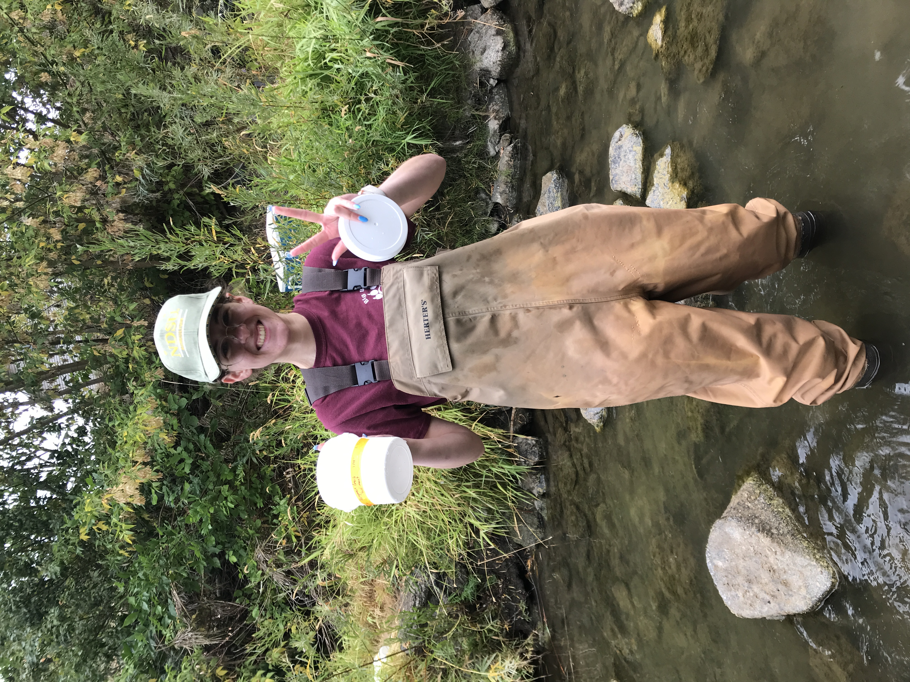
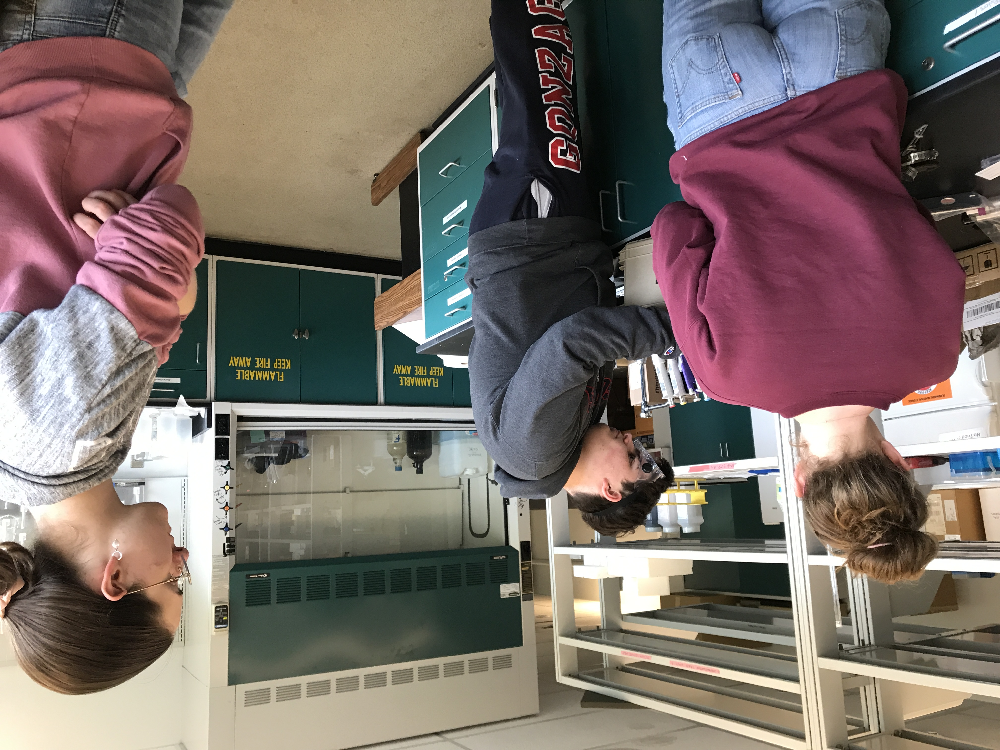
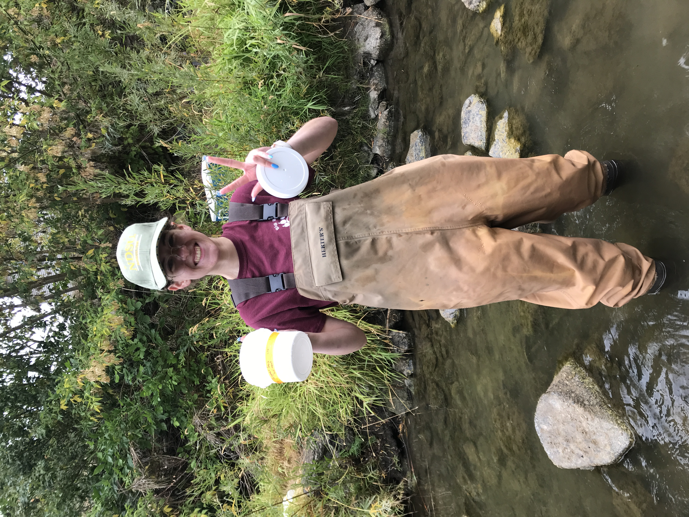
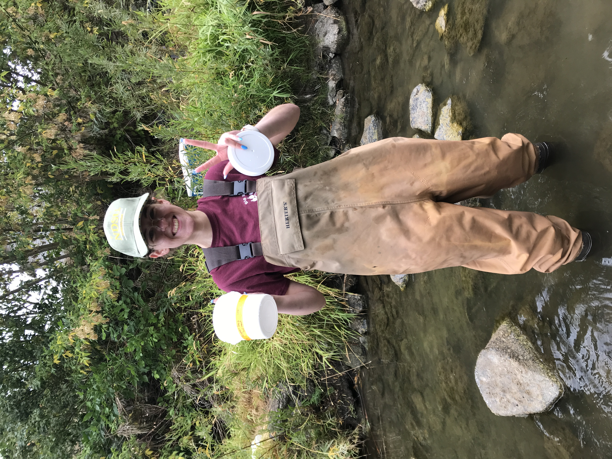
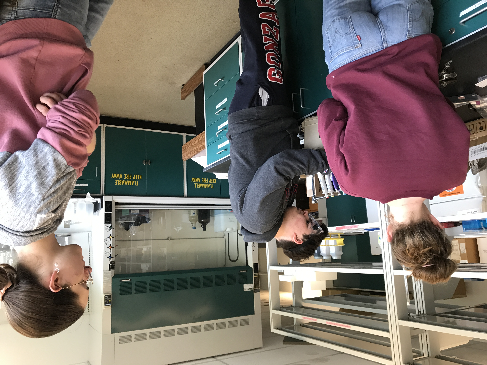
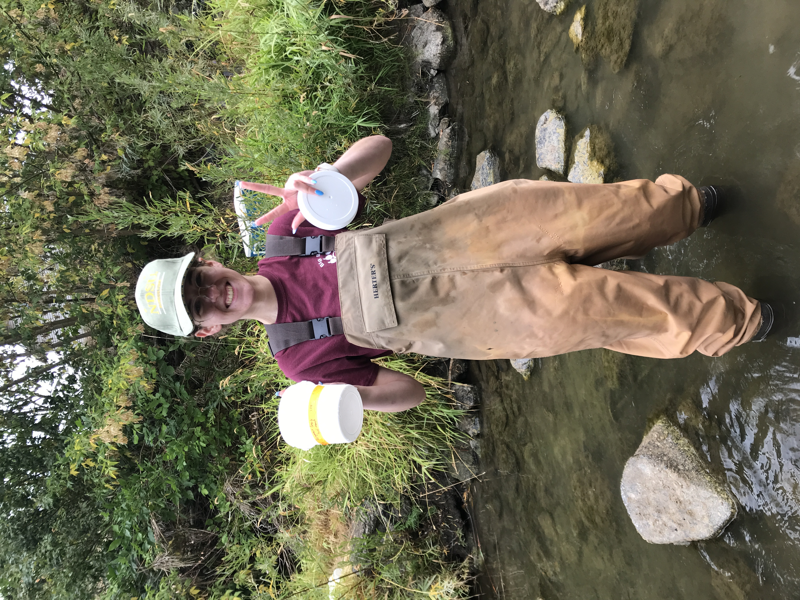

Welcome to the Mathews Lab!
 



 





We are just nerds who love water and soil. The Mathews Lab is located at the heart of Spokane, WA at Gonzaga University. Gonzaga University is a private undergraduate insitution aimed at providing quality education. We are dedicated to understanding the chemistry of Spokane River water and its major tributaries. As undergraduates students, many of us come from different backgrounds and interests; however, we share a common appreciation for the complexity of freshwater systems. Our Principal Investigator, Dr. Madeleine Mathews, originally came to Gonzaga during the 2023-2024 school year. Dr. Mathews recieved her PhD from the University of Wisconsin in Madison for Environemental Chemistry. She then went on to complete her Post-Doctoral Research in France, studying radionuclides. Upon coming to Gonzaga, Dr. Mathews became interested in the Spokane Watershed. During the 2024 Summer, Dr. Mathews has her first official group of research students who all worked on different projects pertaining to the Spokane Watershed. Currently, the Mathews Lab is monitoring the Spokane River's major tributaries, Little Spokane River and Hangman Creek.
Have a question? Let us know!